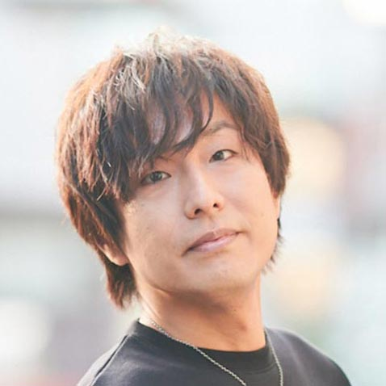

【声マガ・インタビュー】柳田 淳一
TOPICS
PROFILE
アイムエンタープライズに所属する柳田淳一さんは、福岡県出身の4月5日生まれ。『覇穹 封神演義』（黒麒麟役）、『食戟のソーマ 神ノ皿』（青木大吾役）、『ガンダムビルドダイバーズ』（ヤス役）等に出演。2020年1月放送の『number24』では、上丘伊吹役で出演。
バイクの免許を取って3年。休日、山や海の風を浴びて、全身で自然を感じながらツーリングするのが楽しみという柳田さん。「声優の仕事は室内が多いですから、普段の生活の中で味わえない感覚や心の動きを自分の中に取り込みたいのかもしれないですね」と話してくれました。そんな柳田さんに、声優をめざしたきっかけや日本ナレーション演技研究所（以下、日ナレ）で学んだこと、今後の目標について語っていただきました。
学んでみて痛感した声優の難しさ

声優という仕事を意識したのはいつ頃ですか？
テレビっ子だった小学生時代、アニメを観ているうちに、このアニメのこのキャラと、あのアニメのあのキャラは同じ人が声をやっているということを意識するようになったんです。同時に、父が吹き替えの洋画をよく観る人で、「この役の声の人は、あのアニメのあのキャラをやっている人だよ」ということも教えてくれて。そんなことから声優という仕事に興味を持ったと記憶しています。
では、声優をめざしたきっかけを教えてください。
中学生の時に、アニメオタクの友達ができて、一緒にアニメ雑誌を見たり、声優雑誌を見たりして情報交換するうちに、声優に憧れるようになったんです。高校卒業後の進路相談の時には、「声優になりたい」と言っていましたね。でも公務員だった親は大反対！ 何を考えているんだ、なれっこないだろうと。「そもそもそんな才能ない」とまで言われました（苦笑）。
ご両親を説得できたのですか？
闘いました！ でも負けました（笑）。「とにかく大学には行ってくれ」と。ただ、その後は好きなことをしていいと言われたので、大学入学と同時に関東へ出てきました。
大学時代に日ナレに通い始めたのですか？
いえ、養成所に通う前に、まずは演技を経験してみたいと思って、大学の演劇部に入りました。そのうちに、お芝居って楽しいって思えたんでしょうね。セミプロみたいな感じで小劇場に出演するようになって、さらに大学卒業後は劇団に所属して、本格的に芝居を続けました。ところが、劇団が解散してしまい、さあどうしようとなって。その時、そもそも演劇を始めたのは声優になりたいという憧れが元だったのだから、本来の夢だった声優をめざしてみようと思ったんです。
日ナレを選んだ理由を教えてください。
当時読んでいた雑誌に広告が出ていたのを見ていて。で、調べてみたら、僕の好きなアニメのキャラクターの声をされていた方とか、出身者の中に有名な方がたくさんいて。あと、アルバイトして生活していたので、週1回のレッスンなら通えそうかなと思って決めました。
入所した頃の日ナレの印象について教えてください。
声優の演技は経験したことがなかったので、基礎科から入所したんですが、講師の方には「なんで基礎科から入ったの？ もうできているよ」って言われました（笑）。僕は劇場での芝居経験もありましたから、基礎科で学ぶような芝居の基礎はすでにできていたようです。でも、今は基礎科から入って良かったと思っています。それまでとは違った環境で芝居の基礎を習うことはとても楽しかったですし、高校生から年上まで、幅広い年齢層のクラスメイトと、同じ目的のもと、同じレッスンを受けるのはすごく新鮮で、いろいろな影響を受けましたから。例えば、お芝居の経験がない人もいたけれど、初めてだからアイデアがないかというとそんなことはなくて、僕が持っていない視点や鋭いアイデアを出してくることもあって。そういう仲間たちと一緒に切磋琢磨する経験ができた。それは本科も同じでした。
研修科で初めて声優としてのレッスンを受けることになって、いかがでしたか？
これまで体とか表情とか小道具とか、いろいろなツールを使って表現してよかったのに、声だけで動きや体の状態、心情を表現しなければならなくなって、声優の仕事って、こんなに不自由で難しいんだって痛感しました。自分ではできているつもりでも、聞いてみると、「全然足りないし棒読みじゃん！」って。演じるという意味では声優も俳優も同じですが、テニスと野球が同じ球技でも全然違うのと同じくらい、僕にとっては異なりましたね。
ボイスレコーダーを使って人の何倍も練習
事務所に所属したのはいつですか？
本科の終わりの所内オーディションに合格して、アイムエンタープライズに所属しました。
初めての現場のことを覚えていますか？
忘れもしない、所属してすぐの4月末にゲームの仕事をいただきました。マイク前に立つのではなく、テーブルに台本があって、一人だけで座って録音するという仕事だったのですが、僕、ゲームの仕事って一人で３役も４役も兼ねるって知らなかったんですよ。でも、自分なりに頑張って演じ分けたんですが、収録後、マネージャーに「やろうとしていることはわかるけど、全然演じ分けられてないよ」って言われて、めちゃめちゃ凹みました。
どうやって克服していったのですか？
自分がアウトプットしたい声と、実際アウトプットした声にはズレがあることに気づいたので、ボイスレコーダーを買って台本のセリフをいろいろなパターンで演じて、何百回も吹き込んでは聞いて修正するという作業を繰り返しました。もっと体格が大きいと感じられるような声でなければいけないんじゃないかとか、上司に対する言い方だったらもっと控え目じゃなければいけないんじゃないかとか。自分が一番厳しいお客さんになって評価するんです。ボイスレコーダーって鏡と同じなんです。鏡を見ないでメイクしたり、髪形を整えたりした後、実際に見てみると、あれ？ イメージと違うって思うことありますよね。それと一緒で、ボイスレコーダーで自分のイメージと実際の声とのズレを聞いて、修正していくことで、自分のアウトプットを自分がめざす着地点に近づけていくことができるんです。初めての仕事で凹んで以来、人の何倍も努力しなきゃいけないと思って、僕はこの練習を研修科の時から始めました。
お仕事をするようになって、日ナレで学んだことが活きていると実感できることはありますか？
たくさんあります。まず一つは、仕事をもらった時、単にその役をこなして終わるのではなく、どれだけいろいろなことを現場でつかんで帰ってくるかが大事ということを考えられるようになったことです。日ナレのレッスンは、１回のレッスンでどれだけのものをつかめるかの繰り返しでしたからね。単に自分の芝居を見てもらうだけじゃなくて、クラスメイトの芝居を見て、自分にはないやり方だからもらっちゃおうとか、さらに言えば、レッスン日以外の時間も芝居のためにどう活かすかが重要とか、そういうことを考えられるようになったのは大切な経験でした。
あと、普段会話をしている時の心の動きを芝居に活かすようレッスンでよく言われていたんですが、プロになって改めてすごく大事なことなんだって再認識しましたね。例えば、大好きな人と会えた時の“おはよう”と、家族に対しての普段の“おはよう”では違いますよね。そういうことを自分の中に取り込んで、いつでもすぐに出せるようにしておく。会話だけでなく、外に出て空気がおいしかったとか、満員電車で額に汗をかいたとか、日常の些細な心の動きも覚えておくことは絶対に役に立つと実感しています。
その他、講師に言われて印象に残っている言葉はありますか？
「演じるって英語でプレイって言うんだよ。だから遊び心を忘れちゃダメなんだ」っていう言葉は、仕事で行き詰った時によく思い出しています。僕は、芝居というのはギリギリの所で出てきたものを表さなければいけないものだから、めちゃめちゃストイックに自分を追い込まなければと考えがちなんです。でも、講師の方のその言葉を思い出すと、力を抜いて、こうやったら楽しいんじゃないか、こうやったら観ている人は面白いと思ってくれるんじゃないかって、リラックスして違うアプローチを試すことができる。エンターテインメントですから、プレイの心は大事なんだなと痛感しています。
役者にとって一番必要なスキルは自分で考える力
声優として転機になった作品はありますか。
吹き替えを担当した中国ドラマの『孔子』です。主人公の幼なじみで、最後まで行く手に立ちはだかる悪役だったんですが、精一杯演じた後、打ち上げでクライアントさんに「柳田さんにお願いして本当に良かった」と言われ、ディレクターさんにも褒めていただきまして、大きな自信になりました。悪役と言えば、最近出演させていただいた『ファイナルファンタジー14』のアサヒという役も、プレイヤーにとってはブン殴りたいようなキャラクターなんですが、同業者に「めっちゃムカつきました、ありがとうございました」って褒められて、すごく嬉しかったですね（笑）。
ご自身が考える声優の仕事の魅力について教えてください。
いろいろな世界の住人になれるし、想像ではあるけれど、その世界の空気を吸うことができることですね。元々、声優になりたかった理由の一つに、好きなアニメの世界に入って、そこに住むキャラクターとして生きたいという思いがあったんです。今、それが叶っていて本当に楽しいです。あと、『ワールドトリガー』というテレビアニメに出演した時、初登場が憧れていた大ベテランの声優さんに語りかけられるというシーンで。子どもの頃から憧れていた方に、役とはいえ語りかけられて、しかもマイクも隣だったから嬉しくて、テストの時からずっとニコニコ（笑）。「声優になって良かった～」って思いました。ベテランの方も新人も、役の上では並列で、一緒に一つの作品を作り上げる、そういう面白さも声優の魅力だと思います。
今後、どんな声優になりたいですか？
僕が演じたキャラクターが世界のどこかに本当に存在していて、いつか会えるんじゃないか、なんだったら話してみたいって思ってもらえるくらい、キャラクターに生命を吹き込める声優になりたいですね。僕自身、そう思わせてくれたキャラクターに感動して、声優をめざした所があるので。あと、これは声優になる前には想像もしていなかったことですが、今、声優って、雑誌や動画、歌、イベントなどマルチタレントとして活躍する場が増えていますから、もっともっとファンに喜んでいただけるように、そういった部分も磨いていかなければと思っています。
最後に声優をめざしている方へメッセージをお願いします。
どんな仕事でも同じだと思うけど、自分が目標とするゴールに向かって、どう時間を使うかが一番大事です。24時間みんな同じ時間が与えられている中で、自分はどう過ごすか。せめて、日ナレに通っている何年間かだけは、苦手で避けてきたことにチャレンジしてみようとか、通ってこなかった道に足を踏み入れてみようとか、してほしいですね。経験を積むことが何より役者の糧になりますから。役者にとって一番必要なスキルって、自分で考える力だと僕は思うんです。こういう声優になりたいと思った時、自分は今どうなのか。何ができていて、何が足りなくて、改善すべき点は何なのかを常に考えて、トライ＆エラーを繰り返してほしいですね。そしていつか、現場でお会いできたらいいですね。
プロフィール
柳田 淳一
- 所属事務所
- アイムエンタープライズ
主な出演歴
- number24（上丘伊吹）
- 覇穹 封神演義（黒麒麟）
- ガンダムビルドダイバーズ（ヤス）


{kind=link}
{kind=link}
{kind=link}
{kind=link}
{kind=link}